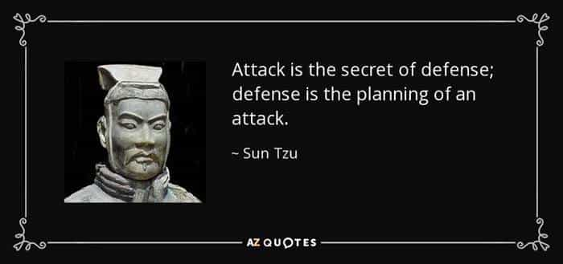
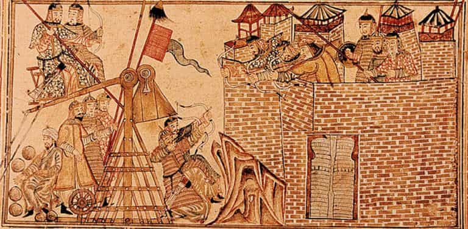

Daryush "Roosh" Valizadeh created ROK in October 2012. You can visit his blog at RooshV.com or follow him on Twitter and Facebook.


At some point in your life, once you’ve accomplished goals centered around the pursuit of power, status, money, or women, you move from playing offense to defense. Energetic ambitions that led to action now become anxious plans of self-preservation. Once a flowing river, your life becomes a stagnant pond as you debate every little movement that you once did with little hesitation.
Defense can be a sound short-term strategy when you’re facing an acute problem that appears out of nowhere. For example, if you lost your job, it would make sense to greatly reduce your expenses until you find another one, but if no new job is forthcoming, you may be tempted to permanently alter your mentality from earning money to saving money, decreasing the odds that you’ll make a bold strike with a new investment or business.

As you may have noticed in the past couple of years, I’ve moved to a defensive posture. I have a goal to not get attacked severely, which has led me to pull a lot of punches. Articles I would have published without delay are now scrapped because I fear a worldwide response. Instead of trying to score viral hits on ROK, I became content publishing long-winded philosophical articles that readers didn’t care for. Instead of trying to increase my income, I’ve taken decreased book earnings on the chin, without actively finding alternative sources of revenue. Instead of fighting to hold more live events, I’ve not attempted to hold a single one, even when I was recently back in DC and could have easily done a happy hour. Instead of saying what I want on Twitter or YouTube, I filter myself constantly to not get banned. My entire mentality has shifted from one of freedom and fun to merely hanging on, as if I’m waiting for the culture to magically heal itself so I can do what I like without having to suffer major consequences.
I see nothing wrong in lacking material goals or not wanting to hit numerical metrics, but a defensive posture operates from a foundation of fear and anxiety. You feel like you’re being attacked even when you’re not as your ego moves from goals of conquest to self-protection. Consider when a man breaks up with his girlfriend of many years. It’s natural for him to be sad when the relationship ends, and mourn for a period of months, but if he’s still crying over her for more than a year without trying to find a replacement, his need for self-protection merely ensures a lonely outcome. Adopting defense as a long-term strategy may preserve some of the money, feelings, and reputation that you’re protecting, but in the long run you can’t avoid suffering a slow and steady decline, all while living in greater anxiety. Smelly, sulfuric algae blooms in still water, not raging rivers.

I’m getting rather tired of playing defense. It’s not that I want to anger millions of more people, or even make more money, but I want to do what I want to do without acting in fear that I may lose everything simply because I want to exercise my speech or hold a legal event. If I’m going to be a writer or publisher, I should write and publish, without a filter. Otherwise I’m just a slave, no different than a man who watches what he says in his corporate job for fear of getting fired by a Human Resources lady. The whole point of striking out on my own was to avoid that pathetic fate.
If I don’t want to write or publish anymore, I should shut it all down and start a new life. Either I go all the way, taking my anchor with me, or I pass the torch to men who are more vigorous, who are eager to do what I’m too scared to do. But I still possess confidence that I have superior ability when it comes to what I’m good at, and I don’t think I can accept playing defense for the rest of my days. I may have to fight the way I want, and accept whatever result the universe gives me, even if I wind up in a dungeon somewhere, somehow, wondering why I couldn’t simply keep my mouth shut.
This article was originally published on Roosh V.
Read Next: 8 Traits That Every Successful Man Has